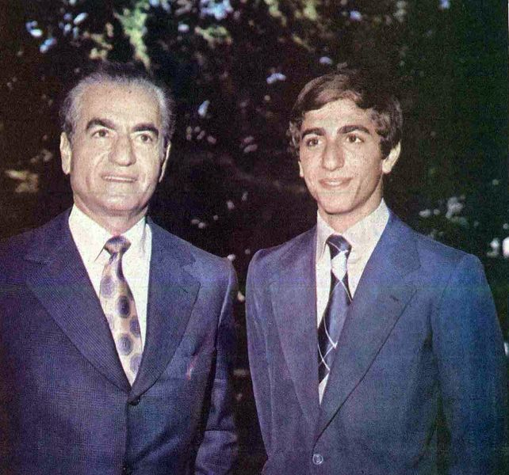
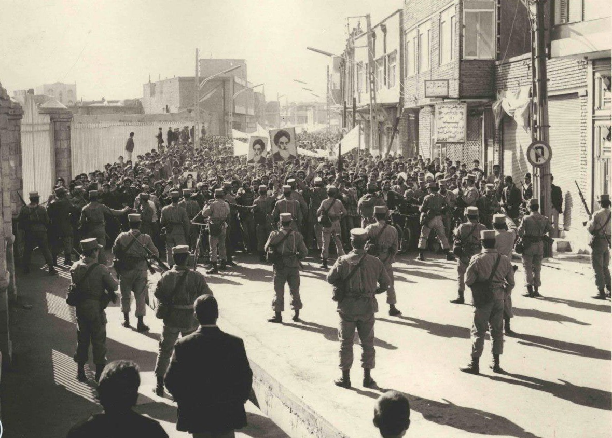
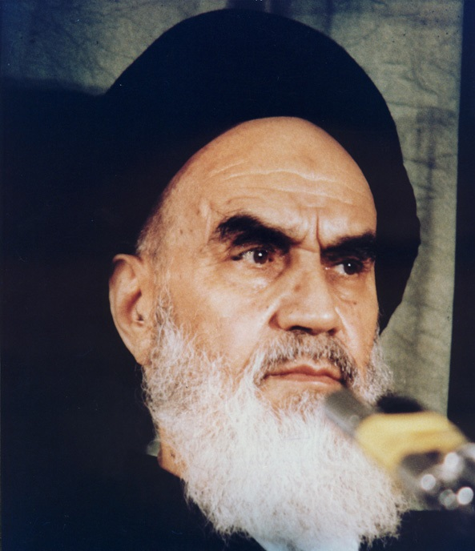

Pada 16 Januari 1979, Mohammad Reza Pahlavi — Shah Iran — menaiki pesawat dan meninggalkan negaranya untuk selamanya. Dua minggu kemudian, 1 Februari 1979, Ruhollah Khomeini mendarat di Bandara Mehrabad, disambut jutaan orang di jalanan Tehran. Pada 11 Februari 1979, angkatan bersenjata Iran menyatakan netralitas — dan monarki berusia 2.500 tahun itu runtuh. Takhta yang 26 tahun sebelumnya direbutkan kembali oleh CIA lewat Operasi Ajax, kini direbut kembali oleh rakyatnya sendiri.

26 Tahun di Atas Takhta (dan Mesin Represi)
Setelah Operasi Ajax Agustus 1953, Shah berkuasa 26 tahun — hingga 1979. Untuk menjaga kekuasaan, pada 1957 ia membentuk SAVAK (Organisasi Intelijen dan Keamanan Nasional) — dengan bantuan organisasi dan pelatihan dari CIA dan intelijen Israel. SAVAK menjadi mesin represi yang ditakuti: penangkapan, penyiksaan, pembungkaman oposisi.
Shah juga meluncurkan "Revolusi Putih" — referendum Januari 1963 dengan paket 6 reformasi (reforma agraria, profit-sharing pekerja, nasionalisasi hutan, dan lainnya; hak pilih perempuan ditambahkan Februari 1963). Hasil resminya: 99,9% setuju — tetapi oposisi memboikot dan pemungutan disebut tidak rahasia. Pada Juni 1963, Khomeini ditangkap setelah pidato keras menyerang Shah; kerusuhan 3 hari meletus dan ditumpas brutal. Khomeini menjadi lawan utama rezim di mata publik — lalu diasingkan pada 1964: Turki, Irak, dan akhirnya Prancis (Oktober 1978).
Boom minyak 1973 memperkaya elite dan militer, tetapi kemiskinan, urbanisasi liar, dan kesenjangan melebar. Modernisasi yang timpang — itulah bahan bakar yang menumpuk selama 26 tahun.
1978: Tahun yang Membakar
Protes bermula Oktober 1977 — kecil, lalu membesar sepanjang 1978. Kemudian dua peristiwa mengubah segalanya.
19 Agustus 1978: kebakaran Cinema Rex, Abadan. Sebuah bioskop dibakar — 377–470 orang tewas. Saat itu, oposisi meyakini pelakunya SAVAK — dan keyakinan itulah yang memicu kemarahan massal. Ratusan ribu orang yang tadinya netral tiba-tiba merasa pemerintah bisa mengorbankan nyawa mereka. Gerakan menjadi milik semua orang. Bukti belakangan (termasuk pengakuan dalam pengadilan 1980) justru menunjuk militan Islam sebagai pelaku.
Catatan redaksi: yang historis penting di sini bukan siapa pelaku sebenarnya, melainkan keyakinan publik saat itu — disinformasi, bukan fakta, yang menyalakan revolusi. Kami tidak menyajikan tuduhan terhadap SAVAK sebagai fakta.
8 September 1978: "Black Friday", Lapangan Jaleh, Tehran. Pemerintah memberlakukan darurat militer; ribuan demonstran berkumpul tanpa mengetahuinya. Tentara menembak. Angka yang paling sering dikutip dan terdokumentasi: 64 demonstran tewas di Jaleh Square, 205 luka; total resmi seluruh Tehran hari itu 86 tewas. Klaim oposisi soal "ribuan" korban tidak didukung dokumen — ia berfungsi sebagai propaganda, dan kami menyajikannya sebagai klaim, bukan fakta.

Januari–Februari 1979: 26 Hari yang Menjatuhkan Takhta
16 Januari 1979: Shah meninggalkan Iran — terbang ke pengasingan (pertama ke Aswan, Mesir). 1 Februari 1979: Khomeini mendarat di Bandara Mehrabad, disambut jutaan orang. 8 Februari: perwira dan personel angkatan udara menyatakan loyalitas kepada Khomeini — retakan di tubuh militer.
11 Februari 1979: revolusi menang. Petinggi angkatan bersenjata menyatakan netralitas; pasukan diperintah kembali ke barak. Baku tembak jalanan dimenangkan gerilyawan dan tentara pemberontak. Perdana Menteri Bakhtiar kabur. Monarki jatuh — bukan karena istana direbut, melainkan karena tentaranya menolak menembak.
Pada 30–31 Maret 1979, referendum menghasilkan 98–99% suara untuk Republik Islam. Desember 1979, Khomeini menjadi Pemimpin Tertinggi lewat konstitusi baru.

444 Hari: Krisis Sandera
Revolusi belum selesai menagih. Pada 4 November 1979, mahasiswa militan menyerbu Kedutaan Besar AS di Tehran — 52 orang ditahan selama 444 hari, hingga 20 Januari 1981. Pemicunya: AS memberi suaka kepada Shah untuk pengobatan kanker (22 Oktober 1979).
Upaya penyelamatan AS, Operasi Eagle Claw (24 April 1980), gagal total — 8 tentara AS dan 1 warga sipil Iran tewas dalam kecelakaan di gurun. Sandera akhirnya dibebaskan lewat Algiers Accords (19 Januari 1981) — beberapa menit setelah Ronald Reagan dilantik — dengan AS mencairkan sekitar US$8 miliar aset Iran yang dibekukan. Shah sendiri wafat 27 Juli 1980 di Kairo, sebelum krisis berakhir.
Dan tagihan terus berjalan: 22 September 1980, Irak menginvasi Iran — membuka Perang Iran–Irak (1980–1988) dengan korban ±500 ribu hingga 1 juta jiwa (rentang antar-sumber; angka pasti tidak ada), termasuk penggunaan senjata kimia oleh Irak. Hubungan AS–Iran putus sejak krisis sandera — dan belum pulih hingga hari ini.
Revolusi menang bukan karena istana direbut — tapi karena tentaranya menolak menembak.
Busur 1953 → 1979: Sebuah Blowback
Apakah kudeta 1953 menyebabkan revolusi 1979? Sejarawan Stephen Kinzer (All the Shah's Men) menarik garis langsung dari aksi CIA 1953 "melalui rezim represif Shah dan Revolusi Islam" — argumen blowback klasik. Yang membuat argumen ini sulit dibantah: CIA sendiri memperingatkan risiko "blow-back" dalam analisis pra-kudeta 1953 — mereka tahu risikonya sebelum bertindak.
Ironisnya, revolusi 1979 justru mengejutkan CIA: laporan mereka sebulan sebelumnya memprediksi tidak ada gejolak dalam waktu dekat bagi rezim Shah. Dan pada Maret 2000, Menlu Madeleine Albright mengakui kudeta 1953 "jelas merupakan kemunduran bagi perkembangan politik Iran." Sejarawan Ervand Abrahamian menyebut kudeta 1953 sebagai garis patahan dalam memori kolektif Iran — bagi orang Iran, permusuhan AS–Iran bermula dari kudeta, bukan dari revolusi.
Catatan redaksi: lompatan kausal langsung "kudeta → teokrasi" menyederhanakan sejarah. Kudeta menutup kanal demokrasi sekuler dan membangun mesin represi — tetapi faktor internal (ketimpangan Revolusi Putih, kekuatan ulama, salah urus ekonomi) sama menentukan. Kami menyajikan kudeta sebagai kondisi perlu, bukan penjelasan tunggal.
Analisis: Dibaca Pakai Lensa Ketahanan Nasional
1. Kekuasaan yang ditopang represi + restu asing itu rapuh. 26 tahun, tentara terbesar di kawasan, SAVAK yang ditakuti — runtuh dalam hitungan bulan begitu legitimasi habis dan tentara menolak menembak. Ketahanan sejati = legitimasi domestik, bukan alat kekerasan.
2. Disinformasi adalah senjata strategis. Kasus Cinema Rex: kecepatan narasi mengalahkan kebenaran, dan narasi yang menang mengubah sejarah. Literasi informasi publik dan kepercayaan pada institusi resmi adalah infrastruktur pertahanan — bukan urusan humas.
3. Setiap intervensi asing punya tagihan jangka panjang. Kudeta 1953 → revolusi 1979 → krisis sandera 444 hari → perang 8 tahun → permusuhan 45+ tahun yang belum selesai. Pelajaran dua arah: jangan jadi korban intervensi, dan pahami bahwa intervensi selalu menagih di kemudian hari.
Arsip & Referensi
Angka dan peristiwa di artikel ini diverifikasi silang dari sumber-sumber berikut:
- Wikipedia — "Islamic Revolution", "Cinema Rex fire", "Black Friday (1978)", "Iran hostage crisis", "Iran–Iraq War" (linimasa & angka, diverifikasi silang).
- Reuters — timeline peringatan revolusi Iran (16 Jan, 1 Feb, 11 Feb 1979).
- GlobalSecurity.org — SAVAK, Revolusi Putih, sejarah Pahlavi.
- Stephen Kinzer, All the Shah's Men — argumen blowback 1953→1979.
- Roy Mottahedeh — dampak keyakinan publik soal Cinema Rex.
- Tandfonline (2025) — perang angka korban Black Friday.
- History.com — akhir krisis sandera, 20 Januari 1981.
- Pernyataan Menlu Madeleine Albright, Maret 2000.
Kredit foto arsip: Shah & Putra Mahkota 1979 — Mashrute (via Wikimedia Commons), public domain; demonstrasi Mashhad 1978 — iichs.ir (via Wikimedia Commons), public domain; Khomeini di Alavi 1979 — iichs.ir (via Wikimedia Commons), public domain.
Catatan redaksi: tuduhan terhadap SAVAK dalam kebakaran Cinema Rex tidak kami sajikan sebagai fakta — yang historis penting adalah keyakinan publik saat itu. Klaim "ribuan" korban Black Friday adalah propaganda tak terverifikasi; kami memakai angka terdokumentasi. Korban perang Iran–Irak hanya tersedia sebagai rentang (500 ribu–1 juta).
Busur Ajax selesai: kudeta 1953 → revolusi 1979. Versi ringkasnya ada di Instagram & TikTok @jejakkuasa — follow biar nggak ketinggalan titik balik berikutnya.